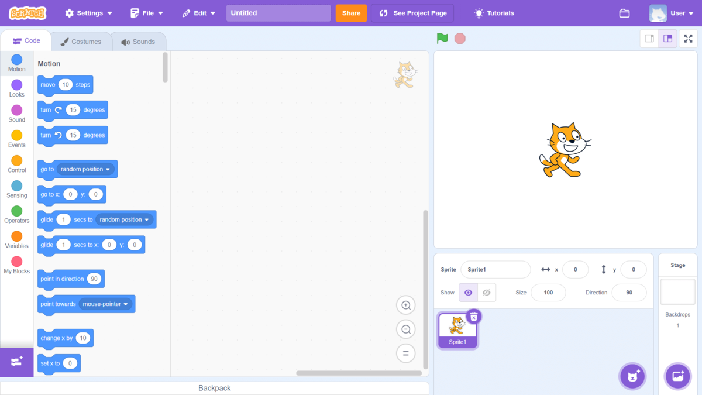

Past
On this webpage, I will detail my previous experiences with computing.
Personal Experiences
I've been using a computer most of my life, with my earliest experiences on Windows XP with my father.
Throughout my life, my most memorable computing experiences include:
- Repairing old iPhone and Android devices.
- Building desktop pc's for personal use.
- Setting up and configuring local NAS services. (Docker, Synology)
- Configuring and maintaining video-game servers. (Assetto Corsa, Counter-Strike, Minecraft)
School Experience
During my primary schooling, I was actively involved in the school's photography and advertisement scene. During my role, I maintained an active directory of the student achievements and schooling events that were directly uploaded to a website for all parent's to view. This experience was quite difficult as the school's computers were quite slow (2000's PC) and often disconnected from the internet.
Later on during high school, I studied Information Processes and Technology (IPT) during year 9 and 10. This subject mainly focused on Software Systems and Social/Ethical issues within a computing space.
One of the most enjoyable assignments from this course was creating a scratch game.
Image sourced from Scratch Wiki
I decided not to pursue another IT subject during my HSC as my school did not offer any courses. However, my past computing experiences helped me in:
- Mathematic Advanced - Graphing Equations.
- English Standard - Multimodal presentation.
- Business Studies - Business Case Study video's.
- Physics - Visual Simulation of Drag
- Investigating Science - Real-time Simulation of Natural Selection
Past Work Experience
After I finished HSC, I worked as a support technician for my high school's IT department. I was tasked with assisting new students register their devices onto the school's system and connect to the WIFI. Additionally, I offered technical support for students and teachers in assisting them with responding to issues relating to hardware, software and network connectivity. Finally, I worked alongside experienced technical agents that diagnosed and resolved various IT problems within the school. During this experience, I obtained first hand experience with understanding large-scale networking infrastructure and security approaches to safely support thousands of devices. This ultimately advanced my interest within the networking and cybersecurity field.